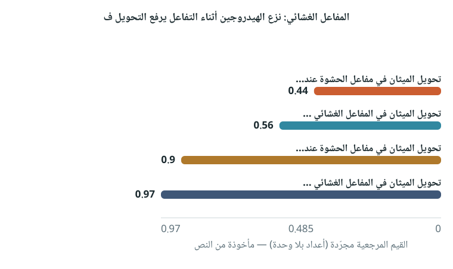

المفاعل الغشائي: نزع الهيدروجين أثناء التفاعل يرفع التحويل فوق حدّ الاتزان
Membrane reactor: hydrogen removal during reaction shifts conversion past equilibrium
المفاعل الغشائي يدمج غشاءً انتقائيًّا للهيدروجين داخل حيّز التفاعل، فيُسحب أحد النواتج باستمرار ويُدفع التفاعل الانعكاسي إلى الأمام. في إصلاح الميثان بالبخار ارتفع تحويل الميثان من 0.44 إلى 0.56 عند 773 كلفن، ومن 0.90 إلى 0.97 عند 923 كلفن.
التفاعل الانعكاسي يتوقف عند الاتزان حين يتساوى معدّل التكوين مع معدّل التفكّك، لا حين تُستهلك المواد المتفاعلة كلها. والمفاعل الغشائي يعمل على الطرف الآخر من هذه المعادلة: بدل تسخين أعلى أو ضغط أكبر، يزيل أحد النواتج من الحيّز التفاعلي أولًا بأول، فينخفض تركيزه ويستمر التفاعل في اتجاه التكوين. الغشاء في الحالة الشائعة طبقة كثيفة من البلاديوم أو سبيكته على دعامة مسامية، والهيدروجين وحده يعبرها بآلية الذوبان والانتشار في المعدن، فيُسحب من جهة النفاذ ويبقى ما عداه في جهة التغذية.
الآلية ثلاث خطوات متتالية: جزيء الهيدروجين يذوب على سطح البلاديوم ويتفكّك إلى ذرّات، ثم تنتشر الذرّات في الشبكة المعدنية، ثم تتحدّد ثانيةً وتنطلق على الوجه الآخر. أبطأ الخطوات تحكم المعدّل، ولذلك يتناسب التدفق عكسيًّا مع سماكة الطبقة المعدنية. وتُضاف إلى ذلك مقاومة الدعامة المسامية، وهي في الدعامات المعدنية غير المعالَجة كبيرة حتى تُذكر.
ما يجعل هذا مفاعلًا لا مجرّد فاصل هو الجوار: الغشاء داخل المفاعل نفسه، فالسحب يقع في اللحظة التي يتكوّن فيها الناتج. والنتيجة المقيسة في إصلاح الميثان بالبخار أن التحويل تجاوز قيمة الاتزان المحسوبة عند كل درجة حرارة اختُبرت، لا عند واحدة. وهذا هو الفرق العملي عن مفاعل حشوة تقليدي يليه فاصل: الفصل بعد التفاعل لا يعيد التفاعل إلى الأمام، والفصل أثناءه يفعله.
كيف تعمل الظاهرة؟
الهيدروجين يعبر الغشاء الكثيف بآلية الذوبان والانتشار: يذوب الجزيء على سطح البلاديوم ويتفكّك إلى ذرّات، فتنتشر الذرّات في الشبكة المعدنية، ثم تتحدّد ثانيةً وتنطلق على الوجه الآخر. ولأن الانتشار في المعدن هو الخطوة الحاكمة، يتناسب التدفق عكسيًّا مع سماكة الطبقة. وفي الغشاء الخالي من العيوب يأخذ الأسّ في قانون سيفرتس القيمة 0.5، أي أن التدفق يتناسب مع فرق الجذر التربيعي لضغط الهيدروجين بين الجهتين. أما في الغشاء المسامي غير الكثيف فتكون الآلية جزيئية، ويظهر ذلك في علاقة خطية بين التدفق والضغط بدل الجذر التربيعي.
العلاقة بالأرقام
قانون سيفرتس يكتب: تدفق الهيدروجين يساوي النفاذية مضروبة في فرق الجذر التربيعي لضغط الهيدروجين على الجهتين، مقسومة على سماكة الطبقة المعدنية. والسماكة الكثيفة غير المدعومة تقع عادة بين 50 و150 ميكرومتر، وتخفيضها يرفع التدفق طرديًّا لكنه يُضعف المقاومة الميكانيكية ويزيد احتمال العيوب. وفي إصلاح الميثان بالبخار عند 1 atm وبخار إلى ميثان 3 إلى 1، ارتفع التحويل الجزئي للميثان من 0.44 إلى 0.56 عند 773 كلفن، ومن 0.90 إلى 0.97 عند 923 كلفن، أي أن الفرق المطلق يتقلّص مع الحرارة بينما يبقى الفرق النسبي ملموسًا.
مفاهيم متقاربة
المفاعل الغشائي ليس فاصلًا لاحقًا للتفاعل: الغشاء داخل حيّز التفاعل، والسحب يقع في اللحظة التي يتكوّن فيها الناتج، فيُزاح الاتزان نفسه لا يُفصل ناتج اتزان قائم. وليس مفاعلًا ذا حرارة أعلى: رفع التحويل يأتي من إزالة الناتج لا من تغيير ثابت الاتزان. وليس غشاءً مساميًّا يرشّح بالحجم: الغشاء الكثيف ينتقي بالذوبان والانتشار في المعدن، ولذلك يوصف انتقاؤه للهيدروجين بأنه شبه كامل نظريًّا. وأخيرًا ليس ضمانًا لتحويل أعلى في كل الظروف، لأن التحويل في مفاعل الحشوة يقترب أصلًا من الاتزان عند الحرارة العالية فيضيق هامش التحسين.
حدود التطبيق
الغشاء الكثيف يخسر نفاذيته بالتدريج: في الدراسة نفسها استُخدم الغشاء عند نقطة استقرار بعد فقدان نحو 60 بالمئة من نفاذية الهيدروجين الابتدائية، فالرقم المصمَّم عليه ليس رقم الغشاء الجديد. والبلاديوم يتأثر بالكبريت وأول أكسيد الكربون، ويصاب بالتقصف الهيدروجيني، ويحتاج سبائك لتحمّله. والعيوب الشعرية في الطبقة الرقيقة تُسقط الانتقائية لأن ما لا يعبر بالمعدن يعبر بالحمل. وضغط التشغيل على جهة النفاذ يجب أن يبقى أدنى من جهة التغذية، وإلا انعدم فرق الجذر التربيعي وانعدم التدفق. وأخيرًا: الأرقام المذكورة من تجربة على غشاء سيليكا-ألومينا لا بلاديوم، فتُنسب إلى نوع الغشاء الذي قيست عليه.

| الكمية | القيمة | المصدر |
|---|---|---|
| تحويل الميثان في مفاعل الحشوة عند 773 كلفن | 0.44 — | [1] |
| تحويل الميثان في المفاعل الغشائي عند 773 كلفن | 0.56 — | [1] |
| تحويل الميثان في مفاعل الحشوة عند 923 كلفن | 0.90 — | [1] |
| تحويل الميثان في المفاعل الغشائي عند 923 كلفن | 0.97 — | [1] |
| سماكة طبقة البلاديوم الكثيفة غير المدعومة النموذجية | 50–150 µm | [2] |
المصادر
- 1 Studies of the methane steam reforming reaction at high pressure in a ceramic membrane reactor — Virginia Tech (أطروحة جامعية، فصل 4) (2005). vtechworks.lib.vt.edu/bitstreams/b85afef0-7ca5-4ed3-96dc-7204ef6f4d5d/download · اطُّلع عليه 2026-11-25
- 2 Review of Supported Pd-Based Membranes Preparation by Electroless Plating for Ultra-Pure Hydrogen Production — MDPI — Membranes (2018). pmc.ncbi.nlm.nih.gov/articles/PMC5872187/ · اطُّلع عليه 2026-11-25
استشهد بهذا المصطلح
الصيغتان مبنيتان من بيانات الصفحة نفسها: العنوان والتاريخ ورابط النسخة المنشورة.
المفاعل الغشائي: نزع الهيدروجين أثناء التفاعل يرفع التحويل فوق حدّ الاتزان — Membrane reactor: hydrogen removal during reaction shifts conversion past equilibrium. (2026). ديوان المعرفة — انفراد. https://infiradev.com/diwan/terms/term-membrane-reactor.html
@misc{term-membrane-reactor2026,
title = {المفاعل الغشائي: نزع الهيدروجين أثناء التفاعل يرفع التحويل فوق حدّ الاتزان},
titleaddon = {Membrane reactor: hydrogen removal during reaction shifts conversion past equilibrium},
howpublished = {{ديوان المعرفة — انفراد} — مرجع علمي عربي},
year = {2026},
url = {https://infiradev.com/diwan/terms/term-membrane-reactor.html},
urldate = {2026-11-26},
note = {مراجعة علمية: hermes (مراجعة معتمدة 2026-11-26)}
}
راجعه: hermes (مراجعة معتمدة 2026-11-26) · 2026-11-26 · آخر تحديث 2026-11-25